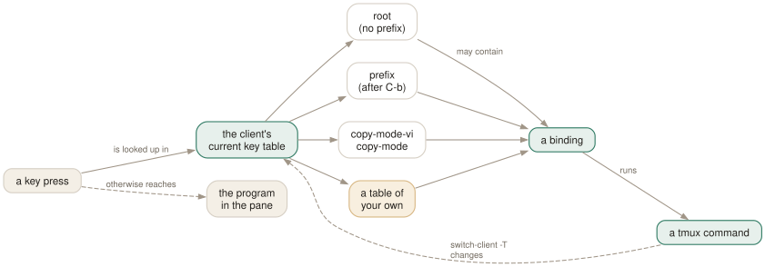

Day 08
Key bindings and key tables
Where keys actually live, and how to add your own without wrecking the defaults.
By the end of today you can
- explain what happens between pressing a key and a tmux command running
- bind keys with and without the prefix, make them repeat, and give them notes
- build a modal key table of your own, the way vim's leader key works
What a key press actually is
A binding is a stored command plus the table it lives in. When you press a key, tmux looks it up in whichever table the client is currently in, and if it finds a binding it puts that command on the command queue. If it does not, the key goes through to the program in the pane.
Four tables matter. root is for keys with no prefix. prefix is for keys after C-b. copy-mode and copy-mode-vi are consulted while a pane is in copy mode. And you can invent your own, which is the last section of today.

switch-client -T is the lever that moves it.Reading what you already have
Before binding anything, learn to interrogate. C-b/ (describe-key) prompts for a key and tells you what it does — far faster than scrolling C-b?.
$ tmux lsk -T prefix | head -5 # every prefix binding, as bind-key commands
$ tmux lsk -N -T prefix # only the ones with notes, human-readable
$ tmux lsk -T copy-mode-vi # the whole of vi copy mode, as data
$ tmux lsk -T root # mouse bindings live here
That last one is worth a minute: every mouse behaviour in tmux — click to select a pane, drag a border to resize, wheel to enter copy mode, right-click for a menu — is an ordinary root-table binding with a name like MouseDown1Pane or WheelUpPane. There is no separate mouse subsystem. Day 12 rebinds some of them.
The four flags
-n- Short for
-T root: bind the key with no prefix. Reserve this for modified keys that no program wants — M-Left, S-F1, C-M-h. Binding a bare letter here takes it away from vim, your shell and everything else, forever. -r- Repeatable. After the command runs, the client stays in the prefix table for
repeat-timemilliseconds, so you can tap the key again without the prefix. The default resize bindings use it;next-windowis a good candidate to add it to. -N "note"- Attach a description. It shows up in C-b? and in customize mode alongside the built-in notes. Costs nothing, and turns your config into its own documentation.
-T table- Bind in a named table. Without it you get the prefix table.
Key names follow a small grammar: C- or ^ for control, M- for alt/meta, S- for shift, plus names like Up, PageUp, Enter, Escape, Space, Tab, BSpace, F1–F12. To bind a quote character you have to quote it, which reads oddly the first time:
bind-key '"' split-window -v
bind-key "'" new-window
Bindings worth having
Today's config adds four groups. The first is the one everybody eventually discovers, usually after a year of typing cd in every new pane:
bind '"' split-window -v -c "#{pane_current_path}"
bind % split-window -h -c "#{pane_current_path}"
bind c new-window -c "#{pane_current_path}"
#{pane_current_path} is a format — tomorrow's subject — evaluated when the key is pressed. Note that this rebinds the defaults rather than adding new keys, which is the right call here: you want the muscle memory you already have to do the better thing.
The second group adds C-b| and C-b- as shape-mnemonic aliases. The third makes synchronize-panes reachable — type once, into every pane in the window, which is how you run the same command on four servers at once. Because it is easy to forget it is on, the binding reports the state it just switched to.
The fourth teaches copy mode to talk to your system clipboard. copy-pipe-and-cancel with no argument pipes the selection to the copy-command option, so setting that once fixes every copy path at the same time.
Modal tables: your own leader key
This is the part that most tmux users never reach, and it takes three lines. switch-client -T name puts the client into a table for exactly one key press, after which it falls back to normal. That gives you vim-style multi-key sequences:
# C-b g then a letter: a small git menu
bind -T git s new-window -n git 'git status; read'
bind -T git l new-window -n git 'git log --oneline --graph -30; read'
bind -T git d new-window -n git 'git diff; read'
bind -N "git prefix" g switch-client -T git
Nest them and you have arbitrary chords. Set key-table and you have modes — a client that starts in a table of your own, with the normal keys reachable through an explicit switch, which is how people build read-only or presentation modes.
New vocabulary
Keys
| Key | Does |
|---|---|
| C-b/ | Describe a key: press it and tmux tells you what it is bound to. |
| C-b? | List every binding in every table — really list-keys -N. |
Commands
| Command | Does |
|---|---|
bind-key c new-window | Bind in the prefix table. Alias bind. |
bind-key -n M-Left select-pane -L | Bind without a prefix (-n = -T root). |
bind-key -r H resize-pane -L | Repeatable: keep tapping without re-pressing the prefix. |
bind-key -N "note" x cmd | Attach a note, shown by C-b?. |
bind-key -T mytable g cmd | Bind in a table of your own. |
unbind-key -T prefix x | Remove a binding. Alias unbind. |
list-keys -T copy-mode-vi | Read a whole mode as data. Alias lsk. |
list-keys -N | Only keys with notes, in a readable form. |
send-keys -X copy-selection | Send a command into a mode. |
send-prefix | Pass the prefix key through to the program. |
switch-client -T mytable | Make the next key be looked up in another table. |
Options
| Option | Does |
|---|---|
prefix | The prefix key. None disables it entirely. |
prefix2 | A second prefix key, for when you want both C-b and C-a. |
repeat-time | Milliseconds the prefix stays live after a -r key. Default 500. |
initial-repeat-time | The same, for the first press of a repeat sequence. |
key-table | Which table a client starts in. The lever behind modal setups. |
Today's configappend to ~/.tmux.conf
New panes and windows should open where you already are. This is the single highest value rebinding in tmux: without it every split starts in your home directory.
bind -N "Split top/bottom, same directory" '"' split-window -v -c "#{pane_current_path}"
bind -N "Split left/right, same directory" % split-window -h -c "#{pane_current_path}"
bind -N "New window, same directory" c new-window -c "#{pane_current_path}"
Mnemonic aliases for the same two splits: the key looks like the border it makes. This takes '-' away from delete-buffer, which you can still reach with C-b = then d.
bind -N "Split left/right" '|' split-window -h -c "#{pane_current_path}"
bind -N "Split top/bottom" '-' split-window -v -c "#{pane_current_path}"
Type into every pane of this window at once - for the same command on four servers. Dangerous enough that the binding announces the state it just moved to.
bind -N "Toggle synchronize-panes" S \
set -w synchronize-panes \; \
display-message "synchronize-panes #{?synchronize-panes,ON,off}"
Copy mode: y copies to a tmux buffer and to the system clipboard, Y does a whole line. Set copy-command to your platform's tool - wl-copy, xclip -sel c, or pbcopy.
set -s copy-command 'wl-copy'
bind -T copy-mode-vi y send-keys -X copy-pipe-and-cancel
bind -T copy-mode-vi Y send-keys -X copy-pipe-line-and-cancel
Reload with tmux source-file ~/.tmux.conf and watch for errors in the status line.
Drillsdo these in a real terminal, today
Self-check
Answer out loud first, then unfold.
What is the difference between bind x and bind -n x?
bind x puts the binding in the prefix table, so it fires on C-bx. bind -n x is short for -T root, the table consulted for keys pressed with no prefix at all — so it fires on a bare x, stealing that key from every program running inside tmux. Root-table bindings are for modified keys nothing else wants (M-Left, S-F5), never for letters.
Why can you tap C-bC-LeftLeftLeft and keep resizing, but not do the same with C-bn?
The resize keys are bound with -r. After a repeatable key fires, tmux keeps the client in the prefix table for repeat-time milliseconds (500 by default), so the next key is treated as though the prefix had been pressed again. next-window is bound without -r, so the prefix is consumed immediately. You can change that: bind -r n next-window.
You want C-b to reach the program in the pane. What happens, and why does C-bC-b work?
The first C-b is swallowed and puts the client into the prefix table. The second is looked up in that table, where it is bound to send-prefix — a command whose only job is to emit the prefix key into the pane. It is an ordinary binding, so you could rebind it, and if you set a prefix2 there is a send-prefix -2 for that one too.
How would you build a “leader key” with several keys under it, like g then s for git status?
With a key table of your own. switch-client -T name tells the client to look the next key up in that table and then fall back to normal:
bind -T git s new-window -n git 'git status; $SHELL'
bind -T git l new-window -n git 'git log --oneline --graph; $SHELL'
bind g switch-client -T git
Tables are how copy mode works too, so this is not a trick bolted on the side — it is the same mechanism the built-in modes use.
Cheat sheet
bind key cmd # prefix table C-b / describe a key
bind -n key cmd # root table (no prefix) — modified keys only
bind -r key cmd # repeatable within repeat-time (default 500 ms)
bind -N "note" ... # self-documenting; shows up in C-b ?
bind -T tbl key cmd # a table of your own
unbind [-T tbl] key # remove one
lsk -T prefix # read the defaults as bind-key commands
lsk -T copy-mode-vi # copy mode is just a key table
lsk -T root # so is the entire mouse
bind g switch-client -T git # + bind -T git s ... = a leader key
Everything through Day 08
Keys
| Key | Does |
|---|---|
| C-bd | Detach this client. The session keeps running. |
| C-b$ | Rename the current session. |
| C-b? | List every key binding. q to leave. |
| C-b: | Open the tmux command prompt. |
| C-bt | Show a clock — a harmless way to prove the prefix works. |
| C-bC-b | Send a literal C-b to the program in the pane. |
| C-bc | Create a window at the lowest free index. |
| C-b, | Rename the current window — and pin the name. |
| C-bn | Next window by index. |
| C-bp | Previous window by index. |
| C-bl | Back to the last window you were in. The one to actually learn. |
| C-b0 | Jump straight to window 0 (likewise 1 … 9). |
| C-b' | Prompt for a window index — for windows above 9. |
| C-bw | Choose a window from an interactive tree with previews. |
| C-b& | Kill the current window, after a confirmation. |
| C-b. | Move the current window to a different index. |
| C-bi | Flash some information about the current window. |
| C-b% | Split left/right. The |-shaped key gives you a |-shaped border. |
| C-b" | Split top/bottom. |
| C-bLeft | Move to the pane to the left (likewise Right, Up, Down). |
| C-bo | Next pane in creation order. |
| C-b; | The previously active pane — the C-bl of panes. |
| C-bq | Flash the pane numbers; press a digit while they show to jump there. |
| C-bz | Zoom: this pane fills the window. Press again to restore. |
| C-bx | Kill this pane, after a confirmation. |
| C-bSpace | Cycle to the next preset layout. |
| C-bM-1 | even-horizontal — side by side in a row. |
| C-bM-2 | even-vertical — stacked in a column. |
| C-bM-3 | main-horizontal — one big pane on top. |
| C-bM-4 | main-vertical — one big pane on the left. |
| C-bM-5 | tiled — a grid. |
| C-bE | Spread the current pane and its neighbours out evenly. |
| C-bC-Left | Resize by one cell (hold to repeat). M-Left does five. |
| C-b{ | Swap this pane with the previous one; C-b} with the next. |
| C-bC-o | Rotate every pane through the layout; C-bM-o rotates back. |
| C-b* | Open a floating pane over the window — hovers above the layout. |
| C-b[ | Enter copy mode at the bottom of the history. |
| C-bPageUp | Enter copy mode already scrolled one page up. |
| C-b] | Paste the most recent buffer into this pane. |
| C-b= | Choose which buffer to paste, from a list with previews. |
| C-b# | List the paste buffers. |
| C-b- | Delete the most recent buffer. |
| q | In copy mode: leave. (Escape in emacs mode.) |
| /? | vi mode: search forward / backward; n and N repeat. |
| C-sC-r | emacs mode: incremental search forward / backward. |
| Space | vi mode: start a selection. C-Space in emacs mode. |
| v | vi mode: toggle rectangle (block) selection. R in emacs mode. |
| Enter | vi mode: copy the selection and leave. M-w in emacs mode. |
| gG | vi mode: top / bottom of the history. |
| C-bC | Customize mode: browse and change every option and key, with descriptions. |
| C-bR | Reload ~/.tmux.conf — after you add today's binding. |
| C-bs | Choose a session from the tree — with previews, tagging and filtering. |
| C-b( | Switch this client to the previous session. |
| C-b) | Switch this client to the next session. |
| C-bL | Switch back to the last session. The C-bl of sessions. |
| C-bD | Choose a client from a list and detach it. |
| C-b$ | Rename the current session. |
| C-b/ | Describe a key: press it and tmux tells you what it is bound to. |
| C-b? | List every binding in every table — really list-keys -N. |
Commands
| Command | Does |
|---|---|
tmux | Start the server if needed and create a session, attached. |
tmux new -s work | Create a session named work. |
tmux new -A -s work | Attach to work, creating it only if absent. |
tmux ls | List sessions on this server. Alias for list-sessions. |
tmux attach -t work | Attach this terminal to work. |
tmux attach -d -t work | Attach, detaching any other client first. |
tmux detach | Detach the current client, from inside or by target. |
tmux rename-session api | Rename the current session. |
tmux kill-session -t work | Destroy a session and everything in it. |
tmux kill-server | Destroy every session. The nuclear option. |
new-window | Create a window. Alias neww. |
new-window -n logs | Create it with a fixed name. |
new-window -c ~/src/api | Create it with that working directory. |
new-window -d | Create it but do not switch to it. |
new-window -a -t 2 | Insert after window 2, shifting the rest along. |
rename-window api | Rename the current window. |
select-window -t :3 | Switch to window 3 of the current session. |
last-window | Switch to the previously current window. |
kill-window -t :logs | Kill a window by name. |
list-windows | List windows in the session. Alias lsw. |
choose-tree -w | The interactive picker behind C-bw. |
split-window -h | Split left/right. Alias splitw. |
split-window -v | Split top/bottom. The default if neither is given. |
split-window -c ~/src | Start the new pane in that directory. |
split-window -l 30% | Give the new pane 30% of the space (-l 20 for cells). |
split-window -b | Put the new pane before — above or to the left of — the old one. |
split-window -f -h | Split the full window height, not just the current pane. |
select-pane -L | Move to the pane on the left (-R -U -D likewise). |
select-pane -t 2 | Move to pane 2 of this window. |
last-pane | Back to the previously active pane. |
resize-pane -Z | Toggle zoom. |
resize-pane -x 100 -y 30 | Resize to an absolute size, cells or %. |
select-layout tiled | Apply a named layout. |
select-layout -E | Spread evenly (what C-bE runs). |
select-layout -o | Undo the most recent layout change. |
list-panes | List panes with index, size and command. Alias lsp. |
kill-pane -a | Kill every pane except this one. |
swap-pane -D | Swap with the next pane, keeping focus behaviour sane. |
copy-mode | Enter copy mode; -u starts a page up, -e exits at the bottom. |
send-keys -X begin-selection | How every copy-mode key is implemented. -X means “to the mode”. |
list-buffers | Show the buffer stack. Alias lsb. |
set-buffer "text" | Put a literal string into a buffer from a script. |
load-buffer file | Read a file into a buffer (- for stdin). |
save-buffer file | Write a buffer out to a file (- for stdout). |
show-buffer | Print the newest buffer. |
paste-buffer -t :1.0 | Paste into a specific pane, not necessarily this one. |
delete-buffer -b name | Remove one buffer. |
capture-pane -p -S -3000 | Dump the last 3000 lines of history to stdout. |
clear-history | Throw away a pane's scrollback. Alias clearhist. |
set-option -g name value | Set a global session option. Alias set. |
set-option -w name value | Set a window option (for the current window). |
set-option -p name value | Set a pane option (for the current pane). |
set-option -s name value | Set a server option. |
set-option -u name | Unset, so the value is inherited again. |
set-option -a name value | Append to a string or style option instead of replacing it. |
show-options -g | Show global session options. Alias show. |
show-options -A | Show them including inherited values, marked with *. |
show-options -gv history-limit | Print just the value of one option. |
source-file ~/.tmux.conf | Run a file of tmux commands now. Alias source. |
customize-mode | The interactive option browser behind C-bC. |
new-session -d -s api | Create a session in the background and stay where you are. |
new-session -A -s api | Attach if it exists, create if it does not. |
new-session -c ~/src/api -s api | Create with a starting directory. |
switch-client -t api | Move this client to another session, without detaching. |
switch-client -l | Back to the previous session. |
has-session -t api | Exit 0 if it exists. The if in every wrapper script. |
attach-session -d -t api | Attach here and detach whoever else was looking. |
list-clients | Which terminals are attached to what. Alias lsc. |
detach-client -s api | Detach every client from that session. |
kill-session -a | Kill every session except the current one. |
choose-tree -Zs | The session picker behind C-bs. |
tmux neww \; splitw -h | Two commands in one invocation. Note the escaped semicolon. |
display-message -p '#{pane_id}' | Print a value to stdout instead of the status line. |
list-panes -a | Every pane on the server, not just this window. |
list-windows -a | Every window on the server. |
list-sessions -F '#{session_name}' | One field per line — the shape scripts want. |
list-commands | Every command tmux knows, with its synopsis. Alias lscm. |
list-commands neww | The synopsis for one command. |
bind-key c new-window | Bind in the prefix table. Alias bind. |
bind-key -n M-Left select-pane -L | Bind without a prefix (-n = -T root). |
bind-key -r H resize-pane -L | Repeatable: keep tapping without re-pressing the prefix. |
bind-key -N "note" x cmd | Attach a note, shown by C-b?. |
bind-key -T mytable g cmd | Bind in a table of your own. |
unbind-key -T prefix x | Remove a binding. Alias unbind. |
list-keys -T copy-mode-vi | Read a whole mode as data. Alias lsk. |
list-keys -N | Only keys with notes, in a readable form. |
send-keys -X copy-selection | Send a command into a mode. |
send-prefix | Pass the prefix key through to the program. |
switch-client -T mytable | Make the next key be looked up in another table. |
Options
| Option | Does |
|---|---|
automatic-rename | Window renames itself after the running command. On by default. |
automatic-rename-format | The format used when it does. Defaults to the pane's command. |
allow-rename | Whether a program in the pane may rename the window by escape sequence. |
main-pane-width | Width of the big pane in the main-vertical layouts. Accepts %. |
main-pane-height | Height of the big pane in the main-horizontal layouts. |
tiled-layout-max-columns | Cap the columns in the tiled layout; 0 means no cap. |
mode-keys | vi or emacs key bindings inside copy mode. Default emacs. |
history-limit | Lines of scrollback kept per pane. Default 2000, which is stingy. |
copy-command | Shell command that bare copy-pipe pipes to — your clipboard tool. |
set-clipboard | Whether tmux sets the terminal's clipboard with OSC 52. |
word-separators | What counts as a word boundary for w and b. |
wrap-search | Whether searches wrap around the end of the history. On by default. |
base-index | Index the first window gets. Default 0. |
pane-base-index | Index the first pane gets. Default 0. A window option. |
renumber-windows | Close the gaps in window indices when one is killed. |
escape-time | Milliseconds tmux waits to decide whether Escape began a key sequence. |
focus-events | Pass terminal focus in/out through to the programs in panes. |
display-time | How long status line messages stay up. 750 ms by default. |
default-terminal | The $TERM new panes get. Must be a screen/tmux derivative. |
detach-on-destroy | What a client does when its session dies. off moves it to another session instead. |
destroy-unattached | Destroy a session once the last client leaves. Off by default, and rightly. |
default-size | Size for sessions created detached, when no client dictates one. |
window-size | Whether a window sizes to the largest, smallest or latest attached client. |
aggressive-resize | Size each window to the clients actually viewing it, not the whole session. |
command-alias | Server option: an array of your own command aliases. |
prefix | The prefix key. None disables it entirely. |
prefix2 | A second prefix key, for when you want both C-b and C-a. |
repeat-time | Milliseconds the prefix stays live after a -r key. Default 500. |
initial-repeat-time | The same, for the first press of a repeat sequence. |
key-table | Which table a client starts in. The lever behind modal setups. |